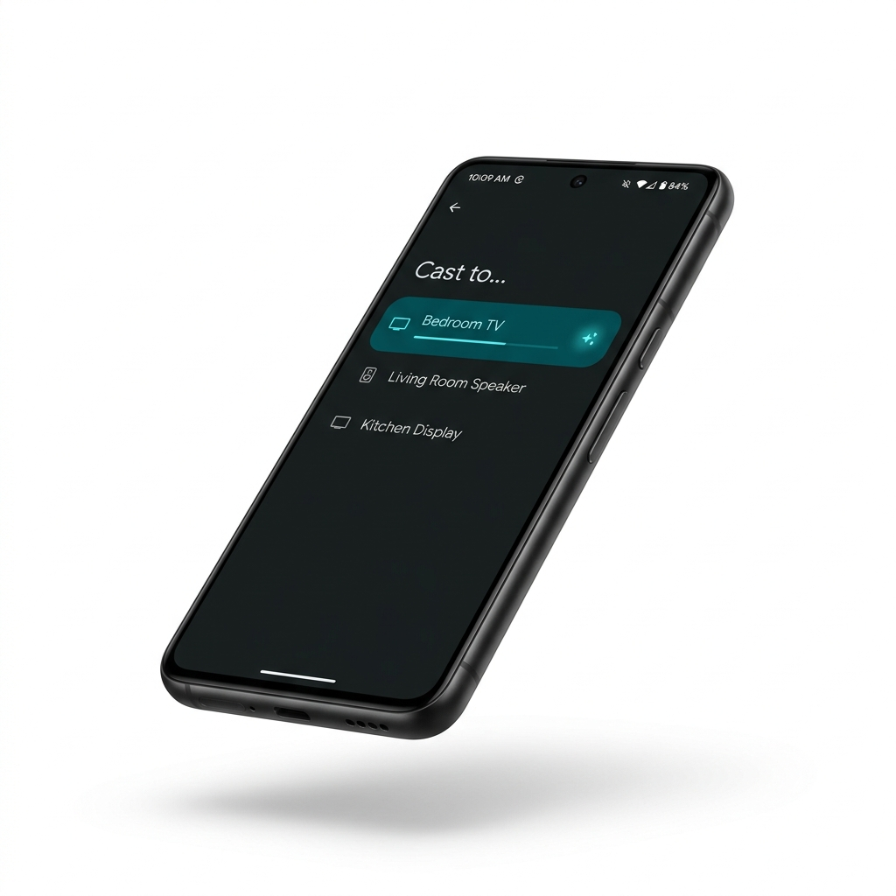

Cast & Share In Seconds.
Share files, stream your screen, and control your device locally across your home network — or relay it to your own server and watch from anywhere.
Checking latest version…

Scan to Connect
Ready to Connect
Enter your phone's IP address to begin casting.